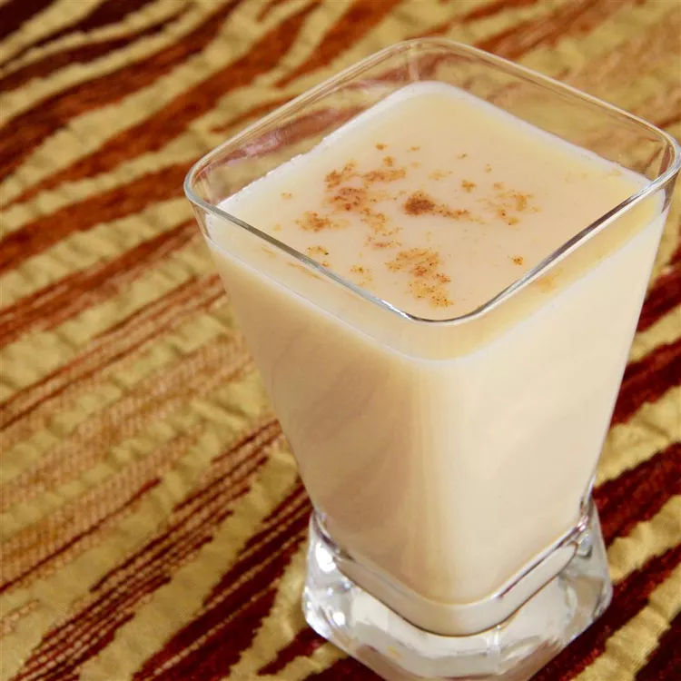

Vitamix Eggnog Recipe

Description
This blender-eggnog recipe has been customized for people who own powerful, high-performance blenders, such as a Vitamix or Blendtec.
These blenders friction-boil liquids; thus the result is cooked, non-alcoholic eggnog made in a jiffy!
Ingredients
- 4 eggs
- ½ cup white sugar
- ½ cup rum, or to taste
- 4 cups milk
- 1 tablespoon ground nutmeg
Steps
- Whip eggs, sugar, and rum in high-powered blender on High until a thick custard forms, about 4 minutes
- Pour milk and add nutmeg to custard; blend on Medium until well-mixed, about 2 minutes. Increase the speed to High for 1 minute.
- Chill for 4 hours before serving.